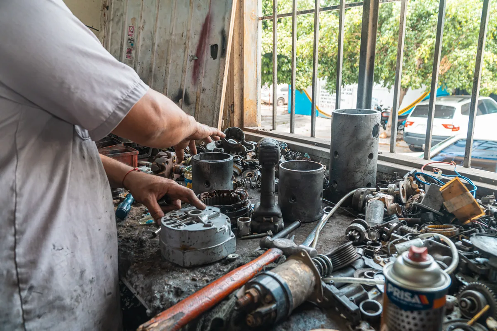

Модификация
Двигатель, коробка, привод и комплектация меняют применимость.
Совместимость до заказа
Нужная деталь определяется не только маркой автомобиля. Важны модификация, двигатель, дата выпуска, маркировка узла и результат диагностики.

Когда нужен подбор
Данные
Почему бывают варианты
Двигатель, коробка, привод и комплектация меняют применимость.
Производитель может менять конструкцию в пределах одного поколения.
Старый номер может иметь официальный или совместимый новый вариант.
На автомобиле уже мог быть установлен узел другой ревизии.
Процесс
Для запроса
FAQ
Он помогает определить модификацию автомобиля и сузить варианты. Иногда дополнительно нужны дата выпуска, маркировка старой детали или данные комплектации.
Фото полезно для чтения маркировки и оценки внешнего состояния, но обычно недостаточно для надёжной проверки совместимости.
Наличие и сроки не заявляются без подтверждения. Конкретный вариант, цена и способ получения уточняются при запросе.
Связанные услуги
Отправьте VIN, модификацию, название узла и маркировку, если она известна.